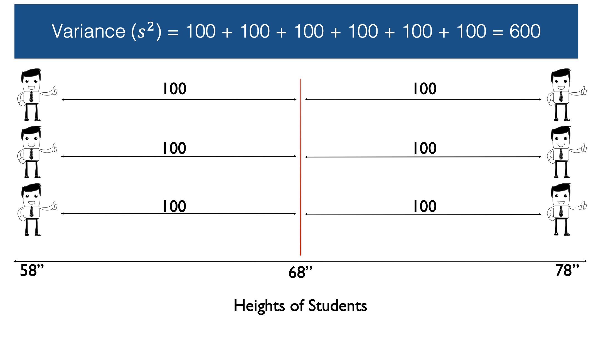

# Load the dplyr package. We will need several of dplyr's functions in the
# code below.
library(dplyr)21 Measures of Dispersion
In the chapter on measures of central tendency, we found the minimum value, mean value, median value, mode value, and maximum value of the weight variable in our hypothetical sample of students. We’ll go ahead and start this lesson by rerunning that analysis below, but this time we will analyze heights instead of weights.
# Simulate some data
height_and_weight_20 <- tribble(
~id, ~sex, ~ht_in, ~wt_lbs,
"001", "Male", 71, 190,
"002", "Male", 69, 177,
"003", "Female", 64, 130,
"004", "Female", 65, 153,
"005", NA, 73, 173,
"006", "Male", 69, 182,
"007", "Female", 68, 186,
"008", NA, 73, 185,
"009", "Female", 71, 157,
"010", "Male", 66, 155,
"011", "Male", 71, 213,
"012", "Female", 69, 151,
"013", "Female", 66, 147,
"014", "Female", 68, 196,
"015", "Male", 75, 212,
"016", "Female", 69, 19000,
"017", "Female", 66, 194,
"018", "Female", 65, 176,
"019", "Female", 65, 176,
"020", "Female", 65, 102
)# Recreate our mode function
mode_val <- function(x) {
value_counts <- table(x)
result <- names(value_counts)[value_counts == max(value_counts)]
if (length(value_counts) == length(result)) {
result <- NA
}
result
}height_and_weight_20 %>%
summarise(
min_height = min(ht_in),
mean_height = mean(ht_in),
median_height = median(ht_in),
mode_height = mode_val(ht_in) %>% paste(collapse = " , "),
max_height = max(ht_in)
)# A tibble: 1 × 5
min_height mean_height median_height mode_height max_height
<dbl> <dbl> <dbl> <chr> <dbl>
1 64 68.4 68.5 65 , 69 75
Note
To get both mode height values to display in the output above we used the paste() function with the collapse argument set to ” , ” (notice the spaces). This forces R to display our mode values as a character string. The downside is that the “mode_height” variable no longer has any numeric value to R – it’s simply a character string. However, this isn’t a problem for us. We won’t be using the mode in this lesson – and it is rarely used in practice.
Keep in mind that our interest is in describing the “typical” or “average” person in our sample. The result of our analysis above tells us that the average person who answered the height question in our hypothetical class was: 68.4 inches. This information gets us reasonably close to understanding the typical height of the students in our hypothetical class. But remember, our average person does not necessarily have the same height as any actual person in our class. So a natural extension of our original question is: “how much like the average person, are the other people in class.”
For example, is everyone in class 68.4 inches?
Or are there differences in everyone’s height, with the average person’s height always having a value in the middle of everyone else’s?
The measures used to answer this question are called measures of dispersion, which we can say is the amount of difference between people in the class, or more generally, the amount of variability in the data.
Three common measures of dispersion used are the:
- Range
- Variance
- Standard Deviation
Range
The range is simply the difference between the maximum and minimum value in the data.
height_and_weight_20 %>%
summarise(
min_height = min(ht_in),
mean_height = mean(ht_in),
max_height = max(ht_in),
range = max_height - min_height
)# A tibble: 1 × 4
min_height mean_height max_height range
<dbl> <dbl> <dbl> <dbl>
1 64 68.4 75 11In this case, the range is 11. The range can be useful because it tells us how much difference there is between the tallest person in our class and the shortest person in our class – 11 inches. However, it doesn’t tell us how close to 68.4 inches “most” people in the class are.
In other words, are most people in the class out at the edges of the range of values in the data?
Or are people “evenly distributed” across the range of heights for the class?
Or something else entirely?
Variance
The variance is a measure of dispersion that is slightly more complicated to calculate, although not much, but gives us a number we can use to quantify the dispersion of heights around the mean. To do this, let’s work through a simple example that only includes six observations: 3 people who are 58 inches tall and 3 people who are 78 inches tall. In this sample of six people from our population the average height is 68 inches.
Next, let’s draw an imaginary line straight up from the mean.
Then, let’s measure the difference, or distance, between each person’s height and the mean height.
Then we square the differences.
Then we add up all the squared differences.

And finally, we divide by n, the number of non-missing observations, minus 1. In this case n equals six, so n-1 equals five.
Note
The sample variance is often written as \(s^2\).
Note
If the 6 observations here represented our entire population of interest, then we could simply divide by n instead of n-1.
Getting R to do this math for us is really straightforward. We simply use base R’s var() function.
var(c(rep(58, 3), rep(78, 3)))[1] 120👆 Here’s what we did above:
We created a numeric vector of heights using the
c()function.Instead of typing
c(58, 58, 58, 78, 78, 78)we used therep()function.rep(58, 3)is equivalent to typingc(58, 58, 58)andrep(78, 3)is equivalent to typingc(78, 78, 78).We passed this numeric vector to the
var()function and R returned the variance – 120
So, 600 divided by 5 equals 120. Therefore, the sample variance in this case is 120. However, because the variance is expressed in squared units, instead of the original units, it isn’t necessarily intuitive to interpret.
Standard deviation
If we take the square root of the variance, we get the standard deviation.
Note
The sample standard deviation is often written as \(s\).
The standard deviation is 10.95 inches, which is much easier to interpret, and compare with other samples. Now that we know the sample standard deviation, we can use it to describe a value’s distance from the mean. Additionally, when our data is approximately normally distributed, then the percentage of values within each standard deviation from the mean follow the rules displayed in this table:
That is, about 68% of all the observations fall within one standard deviation of the mean (that is, 10.95 inches). About 95% of all observations are within 2 standard deviations of the mean (that is, 10.95 * 2 = 21.9 inches), and about 99.9% of all observations are within 3 standard deviations of the mean (that is, 10.95 * 3 = 32.85 inches).
Don’t forget that these percentage rules apply to values around the mean. In other words, half the values will be greater than the mean and half the values will be lower than the mean. You will often see this graphically illustrated with a “normal curve” or “bell curve.”
Warning in geom_segment(aes(x = 68, y = 0, xend = 68, yend = peak), color = "red", : All aesthetics have length 1, but the data has 2 rows.
ℹ Please consider using `annotate()` or provide this layer with data containing
a single row.
Unfortunately, the current data is nowhere near normally distributed and does not make for a good example of this rule.
21.1 Comparing distributions
Now that you understand what the different measures of distribution are and how they are calculated, let’s further develop your “feel” for interpreting them. We can do this by comparing different simulated distributions.
sim_data <- tibble(
all_68 = rep(68, 20),
half_58_78 = c(rep(58, 10), rep(78, 10)),
even_58_78 = seq(from = 58, to = 78, length.out = 20),
half_48_88 = c(rep(48, 10), rep(88, 10)),
even_48_88 = seq(from = 48, to = 88, length.out = 20)
)
sim_data# A tibble: 20 × 5
all_68 half_58_78 even_58_78 half_48_88 even_48_88
<dbl> <dbl> <dbl> <dbl> <dbl>
1 68 58 58 48 48
2 68 58 59.1 48 50.1
3 68 58 60.1 48 52.2
4 68 58 61.2 48 54.3
5 68 58 62.2 48 56.4
6 68 58 63.3 48 58.5
7 68 58 64.3 48 60.6
8 68 58 65.4 48 62.7
9 68 58 66.4 48 64.8
10 68 58 67.5 48 66.9
11 68 78 68.5 88 69.1
12 68 78 69.6 88 71.2
13 68 78 70.6 88 73.3
14 68 78 71.7 88 75.4
15 68 78 72.7 88 77.5
16 68 78 73.8 88 79.6
17 68 78 74.8 88 81.7
18 68 78 75.9 88 83.8
19 68 78 76.9 88 85.9
20 68 78 78 88 88 👆 Here’s what we did above:
We created a data frame with 5 simulated distributions:
all_68 has a value of 68 repeated 20 times
half_58_78 is made up of the values 58 and 78, each repeated 10 times (similar to our example above)
even_58_78 is 20 evenly distributed numbers between 58 and 78
half_48_88 is made up of the values 48 and 88, each repeated 10 times
even_48_88 is 20 evenly distributed numbers between 48 and 88
We will use this simulated data to quickly demonstrate a couple of these concepts. Let’s use R to calculate and compare the mean, variance, and standard deviation of each variable.
tibble(
Column = names(sim_data),
Mean = purrr::map_dbl(sim_data, mean),
Variance = purrr::map_dbl(sim_data, var),
SD = purrr::map_dbl(sim_data, sd)
)# A tibble: 5 × 4
Column Mean Variance SD
<chr> <dbl> <dbl> <dbl>
1 all_68 68 0 0
2 half_58_78 68 105. 10.3
3 even_58_78 68 38.8 6.23
4 half_48_88 68 421. 20.5
5 even_48_88 68 155. 12.5 👆 Here’s what we did above:
We created a data frame to hold some summary statistics about each column in the “sim_data” data frame.
We used the
map_dbl()function from thepurrrpackage to iterate over each column in the data. Don’t worry too much about this right now. We will talk more about iteration and thepurrrpackage later in the book.
So, for all the columns the mean is 68 inches. And that makes sense, right? We set the middle value and/or most commonly occurring value to be 68 inches for each of these variables. However, the variance and standard deviation are quite different.
For the column “all_68” the variance and standard deviation are both zero. If you think about it, this should make perfect sense: all the values are 68 – they don’t vary – and each observations distance from the mean (68) is zero.
When comparing the rest of the columns notice that all of them have a non-zero variance. This is because not all people have the same value in that column – they vary. Additionally, we can see very clearly that variance (and standard deviation) are affected by at least two things:
First is the distribution of values across the range of possible values. For example, half_58_78 and half_48_88 have a larger variance than even_58_78 and even_48_88 because all the values are clustered at the min and max - far away from the mean.
The second property of the data that is clearly influencing variance is the width of the range of values included in the distribution. For example, even_48_88 has a larger variance and standard deviation than even_58_78, even though both are evenly distributed across the range of possible values. The reason is because the range of possible values is larger, and therefore the range of distances from the mean is larger too.
In summary, although the variance and standard deviation don’t always have a really intuitive meaning all by themselves, we can get some useful information by comparing them. Generally speaking, the variance is larger when values are clustered at very low or very high values away from the mean, or when values are spread across a wider range.